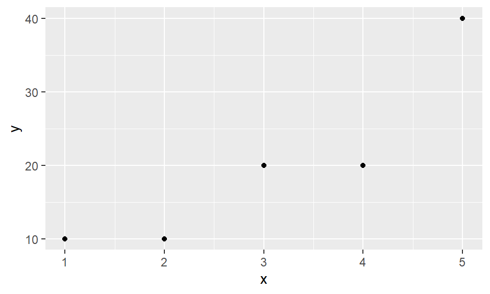
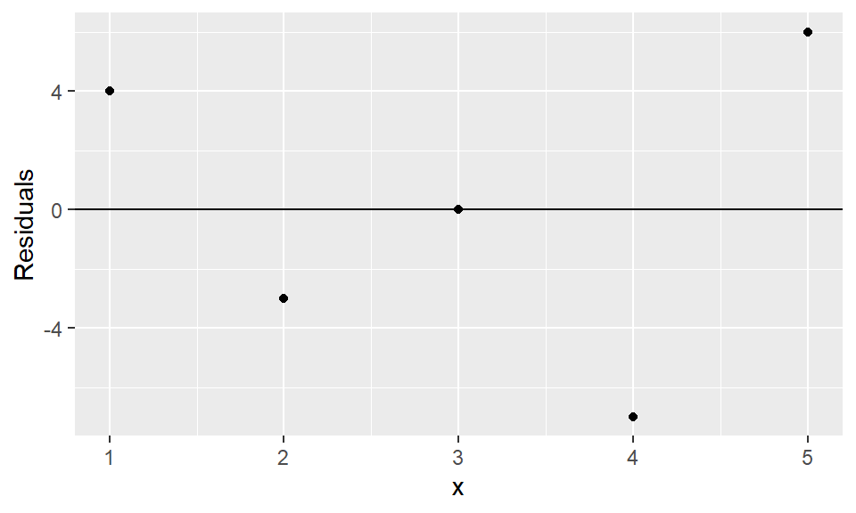
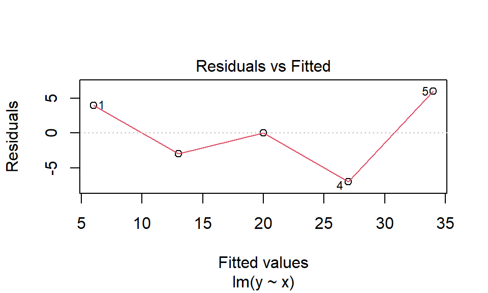
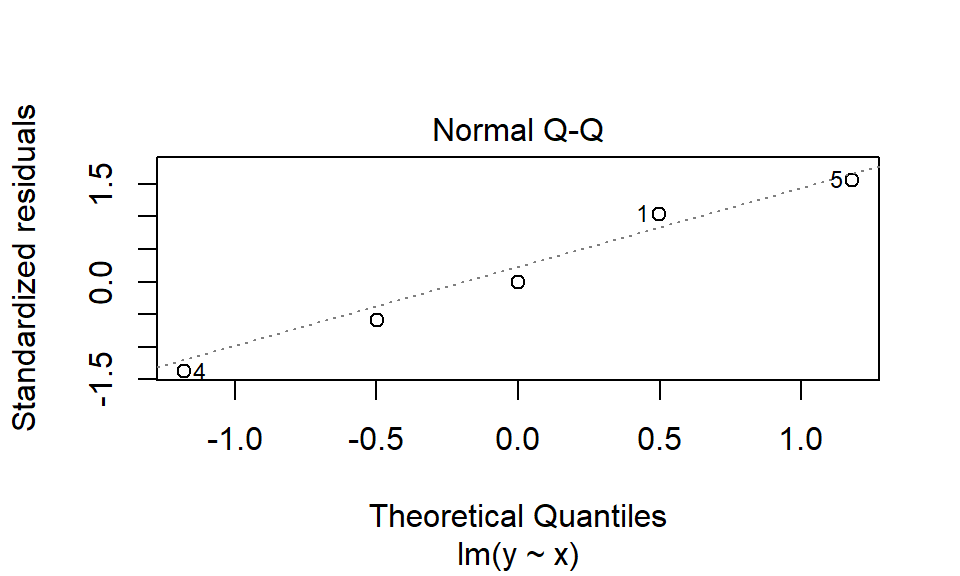
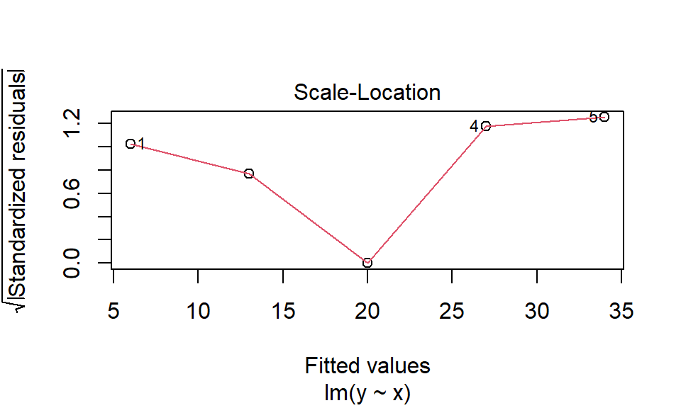
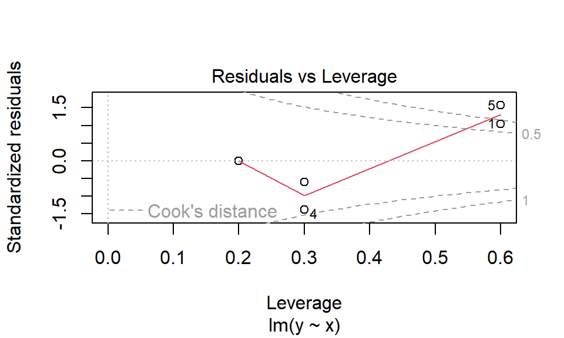

# 读取数据
library(haven)
data = read_sav("data/xt2.14.sav")
head(data)# A tibble: 5 × 2
x y
<dbl> <dbl>
1 1 10
2 2 10
3 3 20
4 4 20
5 5 40一元线性回归
题目：为了调查某广告对销售收入的影响，某商店记录了5个月的销售收入\(y\)（万元）和广告费用\(x\)（万元），数据如下表所示。
# 读取数据
library(haven)
data = read_sav("data/xt2.14.sav")
head(data)# A tibble: 5 × 2
x y
<dbl> <dbl>
1 1 10
2 2 10
3 3 20
4 4 20
5 5 40library(ggplot2)
ggplot(data=data, mapping=aes(x=x, y=y)) +
geom_point()
答：是，由散点图即可看出。
# 最小二乘法拟合回归模型
model = lm(y ~ x, data=data)
model
Call:
lm(formula = y ~ x, data = data)
Coefficients:
(Intercept) x
-1 7 答：回归方程为：\(y = -1 + 7x\)。
# 查看summary结果
# 其中Residual standard error即为Se（或称SEE）
Summary = summary(model)
Summary$sigma[1] 6.055301答：回归标准误差\(\hat{\sigma}\)为：6.055301。
# 附：对lm对象使用summary函数将直接输出模型大部分信息
summary(model)
Call:
lm(formula = y ~ x, data = data)
Residuals:
1 2 3 4 5
4.000e+00 -3.000e+00 -3.775e-15 -7.000e+00 6.000e+00
attr(,"format.spss")
[1] "F8.2"
Coefficients:
Estimate Std. Error t value Pr(>|t|)
(Intercept) -1.000 6.351 -0.157 0.8849
x 7.000 1.915 3.656 0.0354 *
---
Signif. codes: 0 '***' 0.001 '**' 0.01 '*' 0.05 '.' 0.1 ' ' 1
Residual standard error: 6.055 on 3 degrees of freedom
Multiple R-squared: 0.8167, Adjusted R-squared: 0.7556
F-statistic: 13.36 on 1 and 3 DF, p-value: 0.03535confint(model) 2.5 % 97.5 %
(Intercept) -21.2112485 19.21125
x 0.9060793 13.09392答：\(\hat{\beta}_0\)和\(\hat{\beta}_1\)的95%置信区间分别为：(-21.21, 19.21)和(0.91, 13.09)。
Summary$r.squared[1] 0.8166667答：\(x\)与\(y\)的决定系数为：0.8167。
anova(model)Analysis of Variance Table
Response: y
Df Sum Sq Mean Sq F value Pr(>F)
x 1 490 490.00 13.364 0.03535 *
Residuals 3 110 36.67
---
Signif. codes: 0 '***' 0.001 '**' 0.01 '*' 0.05 '.' 0.1 ' ' 1答：P值=0.03535<0.05，说明回归方程显著。
答：由方差分析表，P值0.0354<0.05，显著性水平为5%的情况下拒绝原假设\(H_0:\beta_1 = 0\)，即判定\(\beta_1\)显著不为0。
cor.test(data$x, data$y, method='pearson')
Pearson's product-moment correlation
data: data$x and data$y
t = 3.6556, df = 3, p-value = 0.03535
alternative hypothesis: true correlation is not equal to 0
95 percent confidence interval:
0.1057216 0.9936915
sample estimates:
cor
0.9036961 # 残差图
ggplot(model, aes(x=x, y=.resid)) +
geom_point() +
geom_hline(yintercept = 0) +
labs(y="Residuals")
# 计算内部学生化残差，然后检验异常值
estd = rstandard(model)
sum(abs(estd) > 3) # 大于3Sigma的数量，若为0则判定无异常值[1] 0# 附：当传入一个线性回归模型作为data时，ggplot会默认对其进行加工
# 藏而未现的真实数据框为fortify(model)
head(fortify(model)) y x .hat .sigma .cooksd .fitted .resid .stdresid
1 10 1 0.6 5.916080 8.181818e-01 6 4.000000e+00 1.0444659
2 10 2 0.3 6.969321 7.513915e-02 13 -3.000000e+00 -0.5921565
3 20 3 0.2 7.416198 6.071932e-32 20 -3.774758e-15 0.0000000
4 20 4 0.3 4.472136 4.090909e-01 27 -7.000000e+00 -1.3816986
5 40 5 0.6 3.162278 1.840909e+00 34 6.000000e+00 1.5666989# 附：对lm对象使用plot函数将直接画出四幅图像
# 详细解释参考：《R语言教程》李东风 回归诊断一节
# 1. Residuals vs Fitted
# 2. Normal QQ
# 3. Scale-Location
# 4. Residuals vs Leverage
plot(model)



# interval="predict"计算因变量新值的区间预测
# interval="confidence"计算因变量新值的平均值的区间预测
predict(model,
newdata=data.frame(x = 4.2),
se.fit=TRUE,
interval="predict",
level=.95)$fit fit lwr upr
1 28.4 6.059318 50.74068